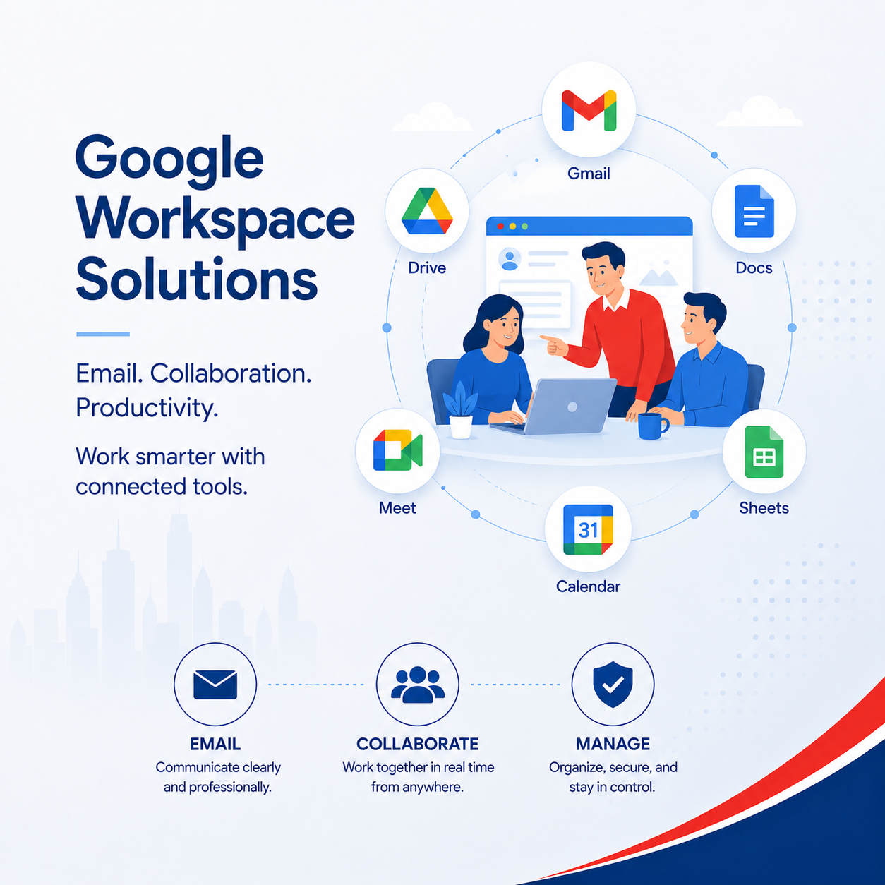

Users, data and cutover
We review mailboxes, aliases, groups, devices, calendars, old access and the best timing for the move.
Move your company email from Outlook and Microsoft 365 to Google Workspace with a clear migration plan, Gmail setup, DNS cutover, user support and post-migration checks.

We review mailboxes, aliases, groups, devices, calendars, old access and the best timing for the move.
We help update mail flow and sender authentication records for Google Workspace and Gmail.
We assist users with Gmail, mobile email, browser access, account testing and guidance after the switch.
Axon explains what changes and helps staff understand how to access email after migration.
Microsoft 365 to Google Workspace migration, Outlook to Gmail business email migration, Office 365 to Gmail migration and Google Workspace setup Singapore.